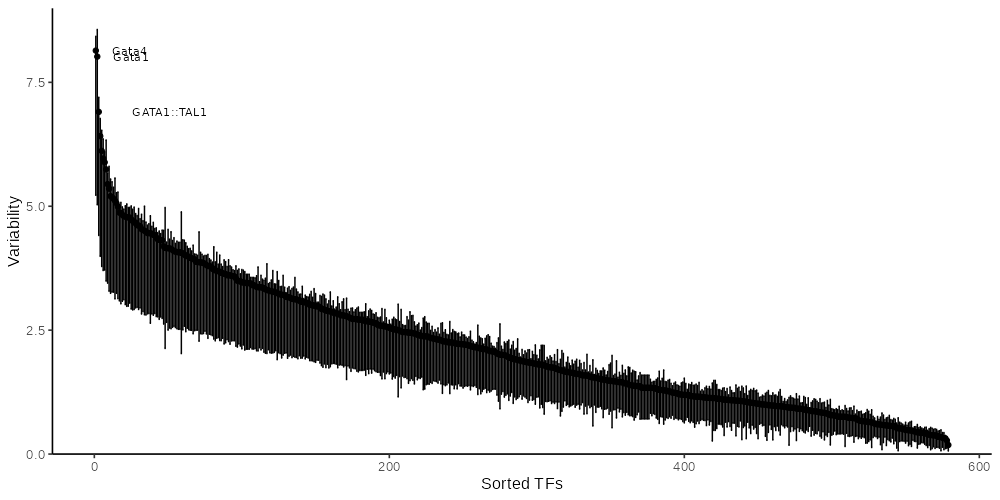

Read counts are summarized for various region types and the corresponding aggregate count matrices are used for dimension reduction. Counts have been log-normalized (log10(count+1)).
This ATAC-seq dataset contains accessibility profiles for 8 samples.
Signal has been summarized for the following region sets:
| #regions | transformations | |
| tiling | 276356 | quantileNorm |
| promoter | 1216 | quantileNorm |
| consensusPeaks | 6256 | quantileNorm |
Fragment data IS available.
Read counts are summarized for various region types and the corresponding aggregate count matrices are used for dimension reduction. Counts have been log-normalized (log10(count+1)).
Samples have been clustered according to the 1000 most variable regions for each region type. Counts have been log-normalized (log2(count+1)).
| Region type |
Clustered heatmap. The 1000 most variable regions are shown. Counts have been log-normalized (log2(count+1)).
chromVAR [1] analysis. The following motif set(s) were used for the analysis: jaspar_vert.
| Region type |

chromVAR variability. TF motifs are shown ordered according to their variability across the dataset.
| Region type |
chromVAR deviation scores. The heatmap shows the scores for 100 most variable TF motifs across the dataset.
{kind=link}
{kind=link}